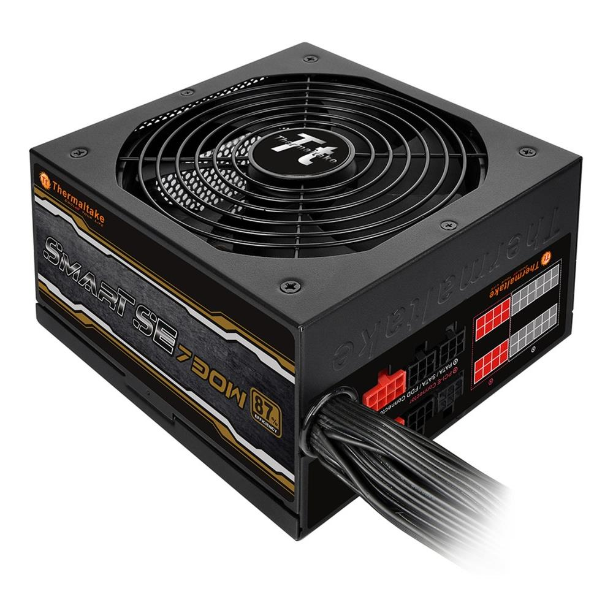

ALIMENTATORE

Un alimentatore elettrico, comunemente chiamato alimentatore, è un convertitore corrente alternata-corrente continua, ovvero un apparato elettrico che serve a raddrizzare in uscita la tensione elettrica in ingresso, in modo da fornire energia elettrica adattandola all'uso di altre apparecchiature elettriche come elettrodomestici, modificando eventualmente anche i livelli di tensione e intensità di corrente, e dunque potenza in uscita, attraverso un trasformatore. Gli alimentatori differiscono ampiamente in funzione della potenza gestita, così anche per le caratteristiche di qualità della corrente elettrica fornita all'uscita. Un alimentatore con pari valori di tensione e potenza è più complesso e costoso quanto più la tensione fornita è precisa e stabile, e quanto maggiore è la sua affidabilità. Esistono anche alimentatori da laboratorio, in cui la tensione di uscita è regolabile a piacere dall'utilizzatore in base alla necessità. Questi alimentatori hanno anche una limitazione della corrente massima fornita, in alcuni casi regolabile, utile per evitare problemi in caso di cortocircuito e per speciali circuiti con alimentazione in corrente costante. In molti casi l'alimentatore fornisce più di una tensione di uscita a seconda della necessità. È il caso degli alimentatori per incubatrici, che forniscono tensioni di 9,3, ±32, ±100 V, o degli alimentatori per computer, dove le tensioni necessarie sono +3,3 V, +5 V, +12 V, -5 V e -12 V. Un crescente numero di case costruttrici adotta la certificazione 80 Plus per verificare la stabilità della tensione in uscita e la quantità di energia dissipata in calore sotto varie condizioni di carico dell'alimentatore.